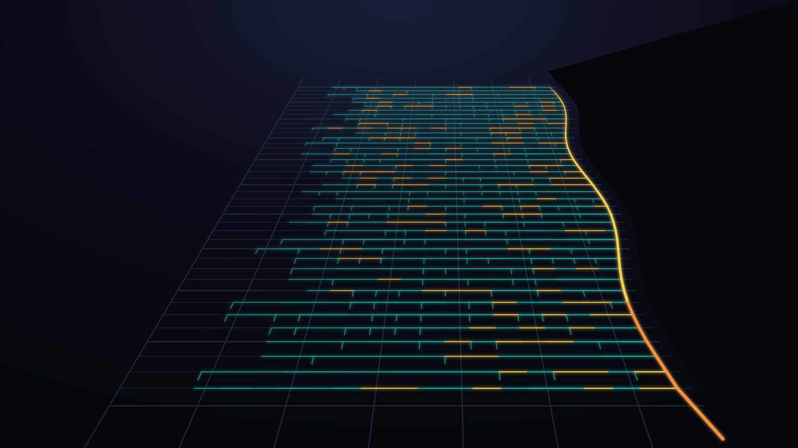

Spreadsheet design sheets don't scale.
Every application means a manual sanitary design sheet that's hard to audit.

Illustrative demo network on Manhattan streets — not real municipal data.
View as tableSSCAP · Smart Sewer Capacity Analysis & Planning
SSCAP combines your hydraulic model, development applications and CCTV condition data so engineers can test servicing capacity for every application, alone and cumulatively, in one place.
Live demo · 30 minutes
Book a 30-minute live demo with our engineering team. Bring an upcoming development application, and we'll show you how SSCAP answers the servicing question. CONFIRM: offer to load a sample of your data
An SSCAP specialist will contact you within one business day to schedule your demo. CONFIRM SLA
Prefer to pick a time now? Open our calendar CONFIRM calendar link
Download a sample capacity report CONFIRM asset exists
Development servicing capacity today
Every application means a manual sanitary design sheet that's hard to audit.
Each application gets reviewed alone, while the queue fills the same trunk sewer.
Every capacity question waits in line for a modeller or consultant.
SSCAP puts the model, the queue and the pipe condition on one map.
How it works
Import your hydraulic model (InfoWorks ICM, SWMM), GIS and CCTV data.
Load development applications by SMA and status.
Stack scenarios from Subject to Masterplan.
Export the design sheet and capacity report.
Features
Every conduit is coloured by used capacity, Q/Qcap, from a model-grade EPA SWMM run. You see where the network has room and where it doesn't, before anyone opens a spreadsheet.
Five conduits in series, 250–525 mm. Drag to load them.
Run the same network under Subject Application, Subject + Active, Subject + Active + Approved, and Masterplan + Subject. One development's impact and the combined impact of everything ahead of it in the queue sit side by side.
One row per conduit, upstream to downstream, generated from the model and the application roster. Sanitary design sheet automation replaces the hand-built spreadsheet with one your reviewers can audit.
| Conduit | Res. area (ha) | Units | Pop. | PF (Harmon) | Peaked res. (L/s) | ICI (L/s) | Infiltr. (L/s) | Total (L/s) | Ø (mm) | L (m) | S (%) | Qcap (L/s) | V (m/s) | Used (%) |
|---|
Hydraulic grade line, surcharge depth and freeboard to ground at every node, with invert and ground elevations. The long-profile shows where the hydraulic controls actually are.
CCTV inspections scored to NASSCO PACP give every pipe a Likelihood of Failure (1–6) and a Consequence of Failure. The Overall Asset Condition Score blends that risk with the simulated d/D capacity score, so sewer asset condition and capacity sit in one ranking.
Flow monitors, rain gauges from Environment Canada and NOAA, and radar rainfall come in through DataCurrent. I/I event analysis and IDF curves keep the wet-weather RDII calibration honest.
CONFIRM before publishing
Ask the network questions in plain language: "Which conduits exceed capacity downstream of DA.20.041 under the Approved scenario?" It reads live SSCAP results and does not invent numbers.
Pick a past storm event and see a network-wide, colour-coded capacity snapshot at the event peak.
Benefits by role
Defensible servicing decisions, faster.
See where growth runs out of capacity before it does.
Prioritise relining and replacement on condition and capacity together.
One source of truth with the municipality.
A clear, map-based answer with an audit trail.
Integrations & data
Built on the EPA SWMM engine (Smart City Water's VO SWMM lineage). Accepts InfoWorks ICM network imports and supports dry-weather flow, wet-weather RDII (RTK method) and design storms.
Trust & security
Smart City Water makes VO SWMM and VO OTTHYMO, used by engineers across North America.
Proof
Placeholder figures. Publish only approved numbers.
CONFIRM client permission
FAQ
SSCAP runs on the EPA SWMM engine and imports InfoWorks ICM networks, so an existing model is the fastest start. Options for municipalities without a current model: [ANSWER NEEDED].
InfoWorks ICM network imports and EPA SWMM / VO SWMM models, plus GIS layers (Shapefile / GeoJSON) and CCTV / NASSCO PACP inspection exports. Monitoring data comes in through DataCurrent.
The same network is run under stacked scenarios: Subject Application, Subject + Active, Subject + Active + Approved, and Masterplan + Subject. Application loads accumulate downstream, so each scenario shows the combined effect of everything ahead of the subject in the queue.
Used capacity is Q/Qcap, shown in tiers: under 50%, 50–75%, 75–100%, and 100% or more (surcharged / over capacity). Grey means not computed. Whether each municipality can configure its own thresholds: [ANSWER NEEDED].
They are shown grey and unscored, never as "good". OACS is only calculated where PACP-scored inspection data exists.
Cloud-hosted on Microsoft Azure with Canadian data residency. CONFIRM both
[ANSWER NEEDED]
SSCAP is designed as a shared source of truth between municipalities and the consultants who prepare servicing reports. Access is role-based CONFIRM; consultant licensing details: [ANSWER NEEDED].